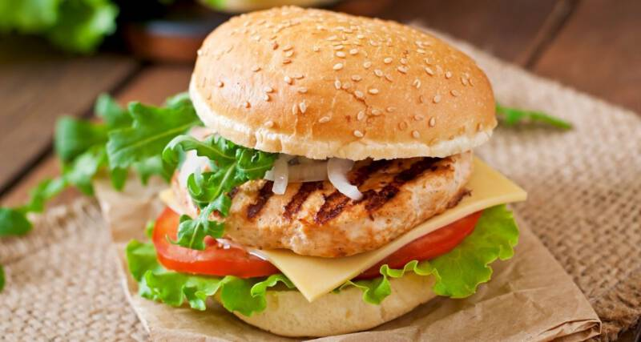

FitBurger

Low cal high protein burger
In this recipe I will show you how to make and amazing burger that had only 490 kcal
It has high amount of protein and it's very easy to make
Let's get started!
List of ingredients
- 1 whole wheat burger bun (approximately 120 calories)
- 4 oz (113g) lean ground turkey or chicken (approximately 150 calories)
- 1/4 cup finely chopped onion
- 1/4 cup grated zucchini
- 1 clove garlic, minced
- 1/2 teaspoon dried oregano
- 1/2 teaspoon paprika
- Salt and pepper to taste
- 1/4 avocado, sliced (approximately 80 calories)
- 1 small tomato, sliced
- Lettuce leaves
- Optional toppings: mustard, low-fat cheese (in moderation)
Step by step instruction
- Preheat a grill or non-stick skillet over medium heat.
- In a bowl, combine the ground turkey or chicken, chopped onion, grated zucchini, minced garlic, dried oregano, paprika, salt, and pepper.
Mix well until all the ingredients are evenly incorporated.
- Divide the mixture into two equal portions and shape them into patties.
- Place the patties on the grill or skillet and cook for about 5-7 minutes per side or until they are cooked through.
Make sure the internal temperature reaches 165°F (74°C).
- While the patties are cooking, lightly toast the whole wheat bun.
- Assemble the burger by placing a lettuce leaf on the bottom bun, followed by the cooked patty.
- Top the patty with avocado slices and tomato slices.
- Add any optional toppings you desire, such as mustard or a small amount of low-fat cheese.
- Finish off by placing the top bun over the toppings.
- Serve the burger with a side of mixed greens or vegetable sticks for a complete meal.